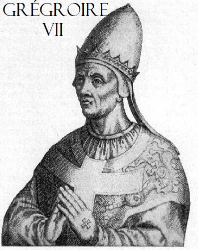

Paroisse Orthodoxe Sainte Clotilde
Voici les différentes vidéos sur la réfutation du Papisme ("Catholicisme" Romain) :
- Différences "Catholicisme" / Orthodoxie :
Le "Filioque"
L'Immaculée Conception
Pierre, Rome et Primauté (1)
Miracles et apparitions dans le "Catholicisme" romain: un point de vue orthodoxe
Réponse à la Fraternité Sacerdotale Saint Pie X
Appel orthodoxe aux "catholiques traditionalistes" français
